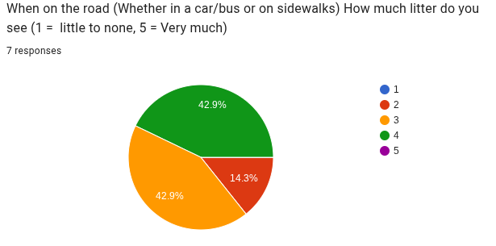

This project explores the issue of litter in Baltimore County and provides ways to combat it.
Litter is any trash (Examples are Plastic Bottles, Candy Wrappers, Bags of Chips, Aluminum Cans, Napkins, Plastic Soda Cups, etc. ) that people throw on the roads, and litter ultimatley ends up in the ocean. Given data from 7 Students, 1 of them gave a 2/5, 3 gave 3/5 and 3 gave 4/5 where 1 = None and 5 = Everywhere.
We can combat litter by doing clean ups organized by Baltimore county or on our own. Some clean ups would be removing plastic from streams, others would be just picking up trash from the streets.
The Testimony from Jon Merryman - a resident from Catonsville, MD - Shows how much we can help our community with removing litter as he has picked up nearly a million peices of litter and nearly a million pounds of junk in nearly 550 counties (1/6 of the US)
This is how my project explores the issue of litter in Baltimore County and provides ways to combat it.